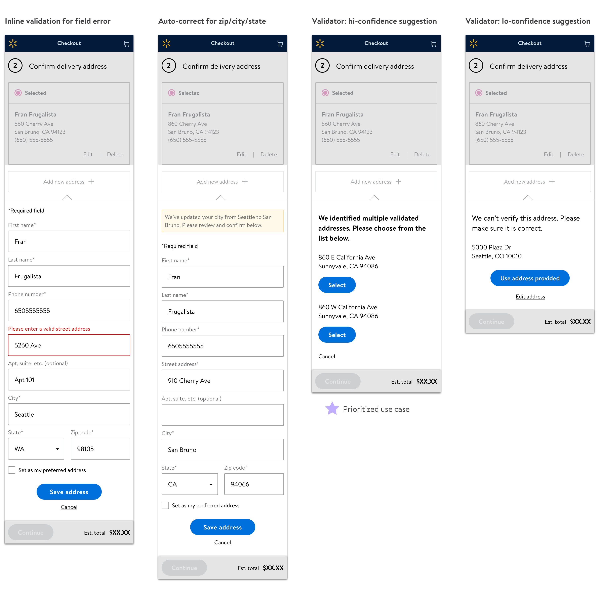
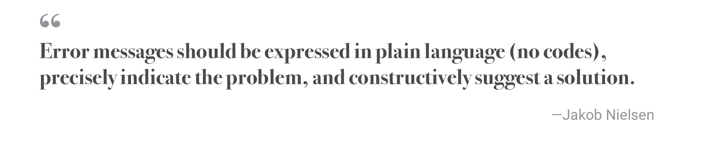
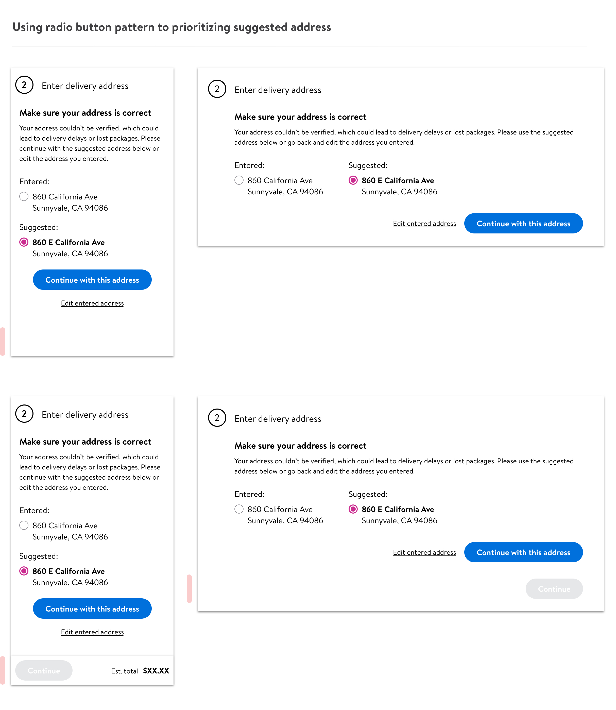

Address validation experience
Error flow - E2E experience
Overview
As an ecommerce giant, Walmart.com adopts a robust delivery system as a pillar of success of the business. By leveraging address validation services (AVS), we are able to validate if the customer’s input matches an address on file, which has been an effective approach to avoid post-transaction frictions such as delivery delays or undelivered orders.
Back in early 2020, data indicated we still have wiggling room. We noticed 7% of adding address attempts resulted in an invalid input during checkout. With a noteworthy percentage of these invalidation implying on the limited capability of address database, we upgraded the license with improved address validation accuracy. To reach experience parity, I worked with the team to identify design opportunities to improve the address validation experience on Walmart.com.
My role
Paragraph
Scope & opportunity
To wrap my head around the current address validation experience, I did a comprehensive audit of all use cases.
Collaborated with product and engineer partners, I learned a tangible opportunity to leverage the upgraded AVS capability by prioritizing our design efforts on high confidence suggestion use case. Due to technical limitation, current validator can only surface out suggestions when there is an exact quantity of 2 on file. For the rest such as a singular suggestion scenario, they are off the table and buried with other low confidence suggestion cases. With more accurate address suggestions honored by the latest AVS upgrade, it’s a revamp of customer trust in their online shopping journey with Walmart.
Heuristics evaluation on current experience
There wasn’t much bandwidth to weave research studies into the project timeline to gain customer insights. Fortunately, as address validation is a well-studied domain, I was able to find the North Star to critique the current design. My main references are Jakob Nielson’s usability heuristics and Baymard’s UX benchmark of 60 major e-commerce sites on address validator design.
At a high level, address validator is a checkout error message. We intervene customers for good, helping them understand the blocker and fix it as still in context. While the intent is on track, there’s space for design to be honed for a better user experience.
Current frictions
We attempt to nudge customers to continue with a suggested address; however, the current flow lacks the “whys.”

1. Message on the validator isn’t crystal clear to pinpoint the cause of this error.
2. It’s hard to catch the discrepancies between entered and suggested addresses without making them all visible for side-by-side comparison.
3. As there’s no guarantee for AVS to be error-less 100%, Baymard studies suggest it’s always helpful to allow customers to override the validator. Such a treatment is overlooked on the current design. Once a validator is triggered, there’re no shortcuts or options to continue with the entered address. The cancel button will bring back to the address entry form, but the validator will be triggered again with another “save address” attempt.
4. On top of these, there’s space to polish the design layout, such as the repetitive CTAs and visual alignment in general.
Iterations & key design decisions
As there’s no guarantee for AVS to be error-less 100%, Baymard studies suggest it’s always helpful to allow customers to override the validator. Such a treatment is overlooked on the current design. Once a validator is triggered, there’re no shortcuts or options to continue with the entered address. The cancel button will bring back to the address entry form, but the validator will be triggered again with another “save address” attempt.

Caveat & tradeoff
When it comes to providing an outlet to edit entered address, there are different voices.
Final
When it comes to providing an outlet to edit entered address, there are different voices.

Design specs
When it comes to providing an outlet to edit entered address, there are different voices.